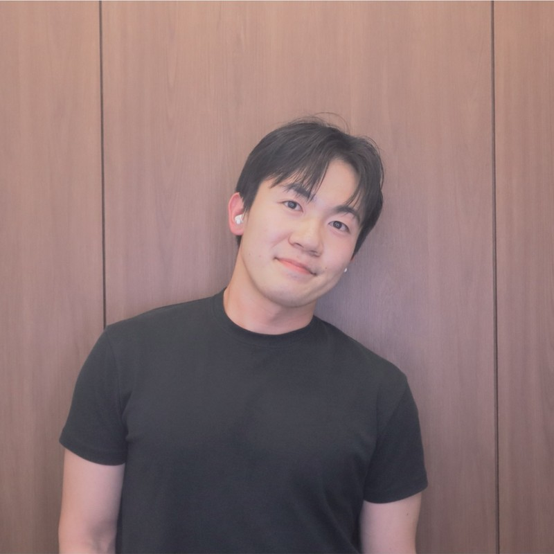

|
서원빈 Wonbin Seo
Hi! 저는 부산대학교 정보컴퓨터공학부에 재학 중인 서원빈입니다.
C/C++, Python으로 기초를 다지고, 최근에는 웹 서비스를 직접 설계하고 구현하는 데 집중하고 있습니다.
팀 프로젝트 FREE-T에서 웹 시스템 설계와 구현을 전담했고, 최근에는 의료 분야 LLM의 추론 신뢰성에 대한 연구로 논문을 투고했습니다.
|

|
Education
|
Mar. 2022 - Present
|
Pusan National University, Busan, South Korea
B.S. in Computer Science and Engineering (정보컴퓨터공학부)
|
|
Experiences
|
Mar. 2026 - Jul. 2026
|
FREE-T, Team Project
Web Developer
- AI 기반 예술특수학교 안전 모니터링 시스템 — 웹 시스템 설계 및 전체 구현 담당
- React, Vite, TensorFlow.js, Vercel Serverless, Kakao Maps API 활용
- Live Demo / GitHub
|
|
Publication
|
2026
|
Beyond Accuracy: Measuring Reasoning Inconsistency of Large Language Models in Medical Domain
Wonbin Seo
DBR — 수정 후 게재가, Rebuttal 및 수정본 제출 완료, 최종 결과 대기 중
의료 분야에서 언어모델의 답변 정확도만으로는 드러나지 않는 추론 과정의 불일치를 측정하는 연구입니다.
|
|
|